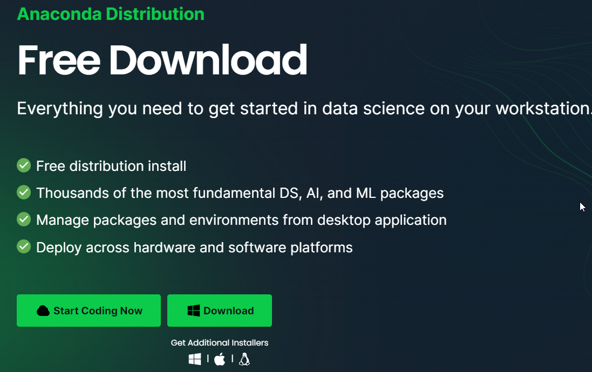
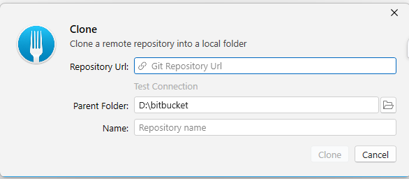
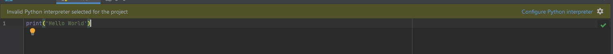
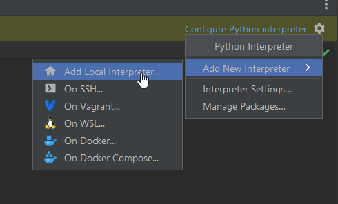
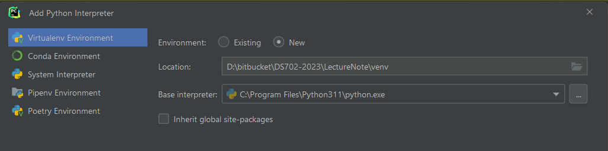
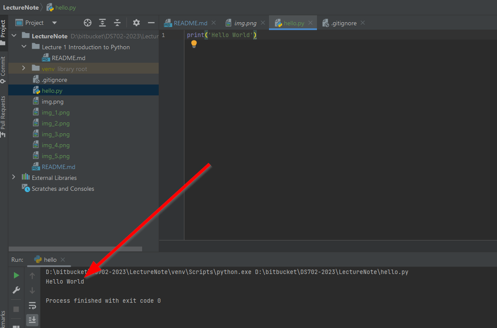

In order to start our Data science programming. We can provide our computer to get run
Install Python run time, and Data science package
The one of the easiest way is to install Conda, install the Conda from the given link here.

The course material is provided in the Git Repository. You should fork the project in order that you can manage your work and still getting the new resources. Please follow the giving steps to prepare your work space.
File->Clone... then paste the URLs you
have copied and select the destination.
Then the source code will be on your computer

open your Pycharm, Open File->Open... then select the location of the code you have
download from your GitHub repository
On the root folder create the file hello.py. Then type the given content
print('hello world')
then you may see the warning in the IDE
 Click Configure the IDE, then select the given choice.

and then  then click OK. After a while you will notice that in the root directory there is the venv folder has been created.
Then click run. You should see the run result here. 
Now This is the end of the lab preparation.